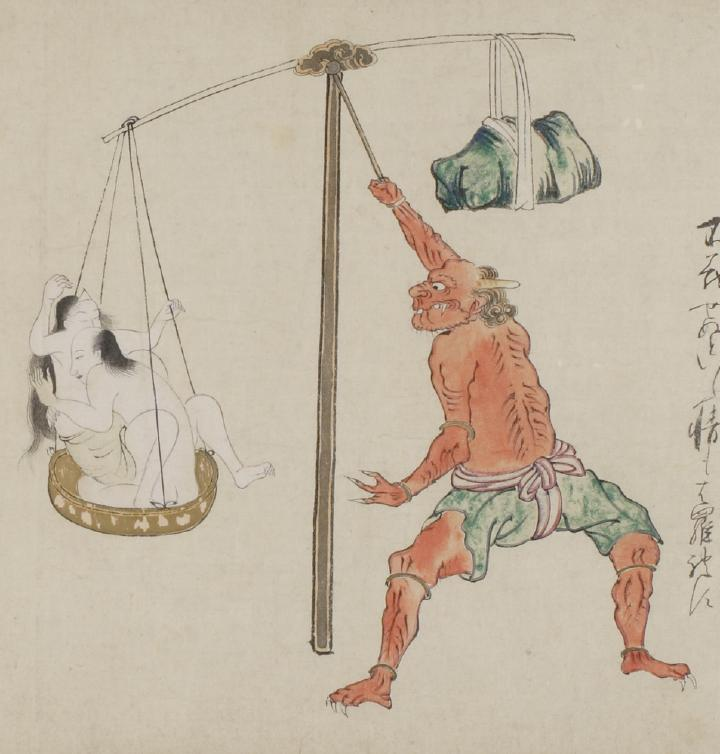

天秤棒を使う鬼。短い角が生え、大きな口をしっかりつぐんでいる。手足の先には鋭い爪が伸び、赤い体をしている。緑色の股引を赤い帯でしめ上げている。天秤の片方の皿には幽霊の男女が乗っており、もう片方の皿には大きな石がつり下げられている。
出典：親書誌：U426_nichibunken_0058：地獄草紙絵巻；ジゴクゾウシエマキ／日付：2006／資源識別子：U426_nichibunken_0058_0003_0000
Copyright (c)2010- International Research Center for Japanese Studies, Kyoto, Japan. All rights reserved.